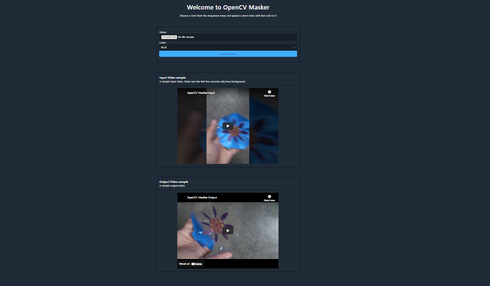

Hello! I am Debabrata Bhattacharya. Welcome to my projects page for OpenCV Masker Django.
Here is a link to my portfolio page. And here's a link back to my projects page.
But first, a little about me!
I am a Software Engineer with experience developing Java, Python, Android, and JavaScript applications. I can develop, integrate, and deploy AWS services. I can also train and deploy Machine Learning models in Python.
Computer Vision Django app that utilizes the OpenCV-Masker algorithm to mask colors in a video.
View here: Deployed on PythonAnywhere.
Technologies used: Python, Django, OpenCV, Ridge CSS, HTML
View the source code on GitHub here.
Here is what the homepage looks like.

Here is a video of the app in use.
Here is a video of the input to the app:
Here is a video of the output from the app: